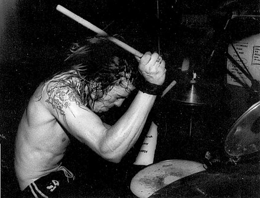
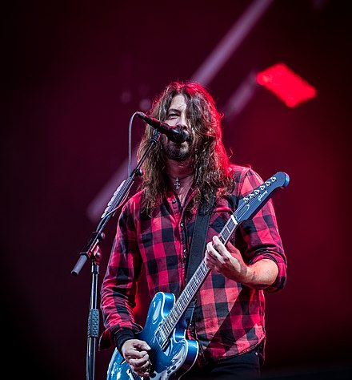
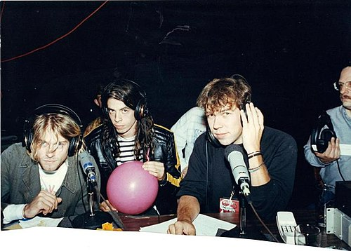

David Eric Grohl was born on January 14, 1969,[3][4] in Warren, Ohio, the son of teacher Virginia Jean (née Hanlon) and newswriter James Harper Grohl (1938–2014).[5] In addition to being an award-winning journalist, James had also served as the special assistant to Sen. Robert A. Taft and was described as "a talented political observer who possessed the ability to call every major election with uncanny accuracy".[6] Grohl is of German, Irish, and Slovak descent.[7][8] When he was a child, Grohl's family moved to Springfield, Virginia. When Grohl was seven, his parents divorced,[9] and he subsequently grew up with his mother. At the age of 12, he began learning to play guitar. He grew tired of lessons and instead taught himself, and he eventually began playing in bands with friends.[3][10] At that age, "I was going in the direction of faster, louder, darker while my sister, Lisa, three years older, was getting seriously into new wave territory. We'd meet in the middle sometimes with Bowie and Siouxsie And The Banshees".[11] At 13, Grohl and his sister spent the summer in Evanston, Illinois, at their cousin Tracy's house. Tracy introduced them to punk rock by taking the pair to shows by a variety of punk bands. His first concert was Naked Raygun at The Cubby Bear in Chicago in 1982 when he was 13 years old.[12] Grohl recalled, "From then on we were totally punk. We went home and bought Maximumrocknroll and tried to figure it all out."[10]
David Eric Grohl was born on January 14, 1969,[3][4] in Warren, Ohio, the son of teacher Virginia Jean (née Hanlon) and newswriter James Harper Grohl (1938–2014).[5] In addition to being an award-winning journalist, James had also served as the special assistant to Sen. Robert A. Taft and was described as "a talented political observer who possessed the ability to call every major election with uncanny accuracy".[6] Grohl is of German, Irish, and Slovak descent.[7][8] When he was a child, Grohl's family moved to Springfield, Virginia. When Grohl was seven, his parents divorced,[9] and he subsequently grew up with his mother. At the age of 12, he began learning to play guitar. He grew tired of lessons and instead taught himself, and he eventually began playing in bands with friends.[3][10] At that age, "I was going in the direction of faster, louder, darker while my sister, Lisa, three years older, was getting seriously into new wave territory. We'd meet in the middle sometimes with Bowie and Siouxsie And The Banshees".[11] At 13, Grohl and his sister spent the summer in Evanston, Illinois, at their cousin Tracy's house. Tracy introduced them to punk rock by taking the pair to shows by a variety of punk bands. His first concert was Naked Raygun at The Cubby Bear in Chicago in 1982 when he was 13 years old.[12] Grohl recalled, "From then on we were totally punk. We went home and bought Maximumrocknroll and tried to figure it all out."[10]



David Eric Grohl (born January 14, 1969) is an American musician, singer, songwriter and director. He is known for being the longest-serving drummer for Nirvana from late 1990 to early 1994.
When Nirvana disbanded following the suicide of Kurt Cobain he became the founder, lead vocalist, rhythm guitarist and primary songwriter of the rock band Foo Fighters. Grohl is also the drummer and co-founder of the rock supergroup Them Crooked Vultures, and wrote the music and performed all the instruments for his short-lived side projects Late! and Probot.
He has also recorded and toured with Queens of the Stone Age.
Grohl established himself as a highly appreciated drummer with Nirvana and in 2014 was inducted into the Rock and Roll Hall of Fame alongside bandmates Kurt Cobain and Krist Novoselic in the group's first year of eligibility. In 2010, Grohl was described by Ken Micallef, co-author of the book Classic Rock Drummers, as one of the most influential rock musicians of the previous 20 years.
"David" Eric Grohl was born on January 14, 1969, in Warren, Ohio, the son of teacher Virginia Jean (née Hanlon) and newswriter James Harper Grohl (1938–2014).[5] In addition to being an award-winning journalist, James had also served as the special assistant to Sen. Robert A. Taft and was described as a talented political observer who possessed the ability to call every major election with uncanny accuracy. Grohl is of German, Irish, and Slovak descent.[7][8] When he was a child, Grohls family moved to Springfield, Virginia. When Grohl was seven, his parents divorced,[9] and he subsequently grew up with his mother. At the age of 12, he began learning to play guitar. He grew tired of lessons and instead taught himself, and he eventually began playing in bands with friends.[3][10] At that age, I was going in the direction of faster, louder, darker while my sister, Lisa, three years older, was getting seriously into new wave territory. Wed meet in the middle sometimes with Bowie and Siouxsie And The Banshees At 13, Grohl and his sister spent the summer in Evanston, Illinois, at their cousin Tracys house. Tracy introduced them to punk rock by taking the pair to shows by a variety of punk bands. His first concert was Naked Raygun at The Cubby Bear in Chicago in 1982 when he was 13 years old.[12] Grohl recalled, From then on we were totally punk. We went home and bought Maximumrocknroll and tried to figure it all out."